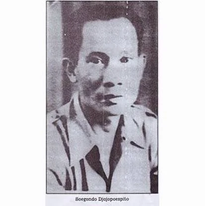

Soegondo Djojopoespito

- Tanggal Lahir : 22 Februari 1905
- Tempat Lahir : Tuban, Jawa Timur, Hindia Belanda
- Tanggal Meninggal Dunia : 23 April 1978
- Lokasi Pemakaman : Taman Makam Pahlawan Kalibata, Jakarta Selatan
Soegondo Djojopoespito adalah salah satu tokoh penting dalam sejarah pergerakan nasional Indonesia, terutama dikenal sebagai pemimpin Kongres Pemuda II yang diselenggarakan pada 27–28 Oktober 1928 di Jakarta. Dalam kongres inilah lahir Sumpah Pemuda, sebuah ikrar bersejarah yang menjadi tonggak persatuan bangsa Indonesia.
Sebagai aktivis muda, Soegondo terlibat dalam berbagai organisasi pergerakan seperti Perhimpunan Pelajar-Pelajar Indonesia (PPPI), yang berperan besar dalam menyatukan organisasi-organisasi pemuda dari berbagai daerah. Setelah kemerdekaan, ia tetap berkiprah di bidang pemerintahan dan pendidikan, di antaranya pernah menjabat sebagai pejabat di Kementerian Pendidikan dan Kebudayaan.
Soegondo Djojopoespito dikenang sebagai sosok nasionalis sejati yang berjuang melalui semangat persatuan dan pendidikan untuk kemajuan bangsa Indonesia.